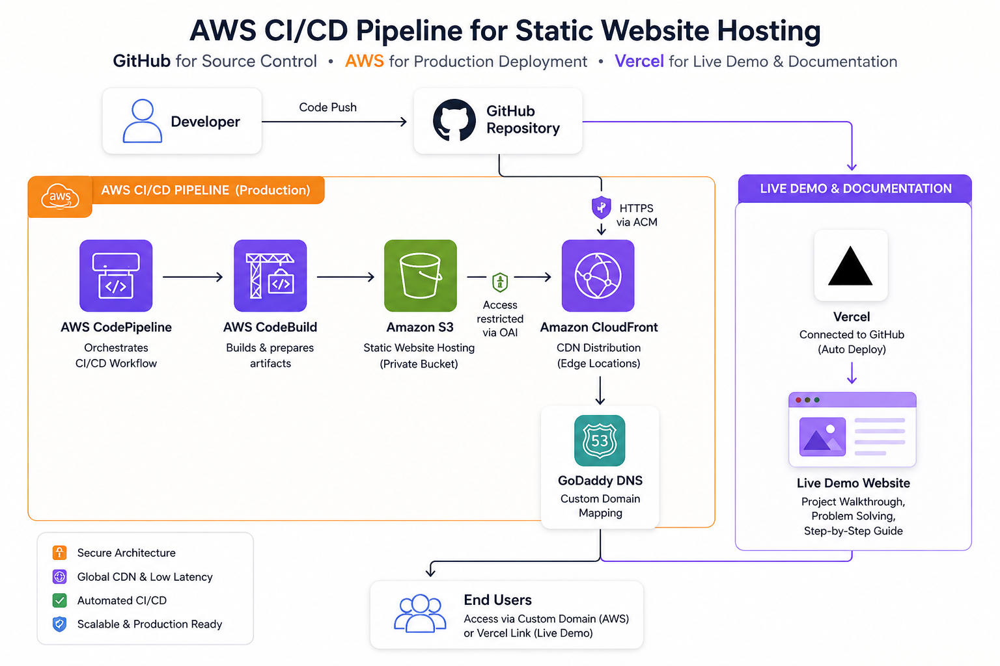

A fully automated cloud deployment pipeline using AWS services. This project demonstrates real-world CI/CD, secure static hosting, and global content delivery architecture.
GitHub repository triggers deployment pipeline automatically.
AWS CodePipeline handles build and deployment process.
S3 securely hosts static website assets.
CloudFront distributes content with low latency worldwide.

Static Website hosted on S3 → Distributed via CloudFront → CI/CD via CodePipeline triggered from GitHub.
S3 Setup
CloudFront Setup
CI/CD Pipeline